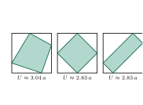
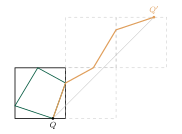
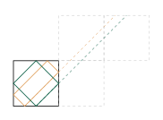

Aufgabe 6.12
Wie müsste man das Viereck in das Quadrat einbeschreiben, so dass es minimalen Umfang hätte?
Experimentieren Sie mit GeoGebra, indem Sie verschiedene Einstellungen für das Viereck vornehmen und seinen Umfang dynamisch messen. Versuchen Sie auch, Ihre Vermutung(en) zu begründen.
- Experimentieren Sie systematisch mit verschiedenen Positionen
- Achten Sie auf Symmetrien
- Denken Sie an das Spiegelungsprinzip
- Was passiert in Extremfällen?
Schritt 1: experimentieren

Mit GeoGebra misst man den Umfang für verschiedene Lagen der vier Ecken. Ein schiefes Viereck ist deutlich länger. Das Viereck aus den Seitenmitten ist kurz, und auffällig: Das Rechteck rechts, dessen Seiten ebenfalls parallel zu den Diagonalen laufen, ist genau gleich kurz. Die Vermutung «nur die Seitenmitten» ist zu eng.
Schritt 2: auffalten

Der Umfang besteht aus den Seiten $QR$, $RS$, $SP$, $PQ$. Man spiegelt das Quadrat an der Seite durch $R$. Das Bild von $RS$ setzt die Seite $QR$ fort. Dann spiegelt man an der Seite durch das Bild von $S$, dann an der durch das Bild von $P$. So liegt der ganze Umfang als Streckenzug von $Q$ bis $Q'$ da, genauso lang wie zuvor.
Rechnet man die drei Spiegelungen nach, liegt $Q'$ immer um $2a$ nach rechts und $2a$ nach oben verschoben, gleich wo $Q$ auf der unteren Seite sitzt. Der Abstand ist also immer $\overline{QQ'} = 2\sqrt{2}\,a$, und kein Streckenzug von $Q$ nach $Q'$ ist kürzer.
Schritt 3: wann der Streckenzug gerade ist

Gleichheit gilt genau dann, wenn der Streckenzug eine gerade Linie ist. Die Gerade von $Q$ nach $Q'$ läuft unter $45^\circ$. Also müssen alle vier Seiten des Vierecks unter $45^\circ$ laufen, parallel zu den Diagonalen des Quadrats.
Das geht für jede Lage von $Q$: Man startet auf der unteren Seite und läuft unter $45^\circ$ zur rechten Seite, dann weiter wie eine Billardkugel. Es entsteht ein Rechteck, und alle diese Rechtecke haben denselben kleinsten Umfang $2\sqrt{2}\,a$. Das Viereck aus den Seitenmitten ist ein Sonderfall davon, nämlich das Quadrat.
Im Video: Bonus · Minimierungsprobleme bei 1:15